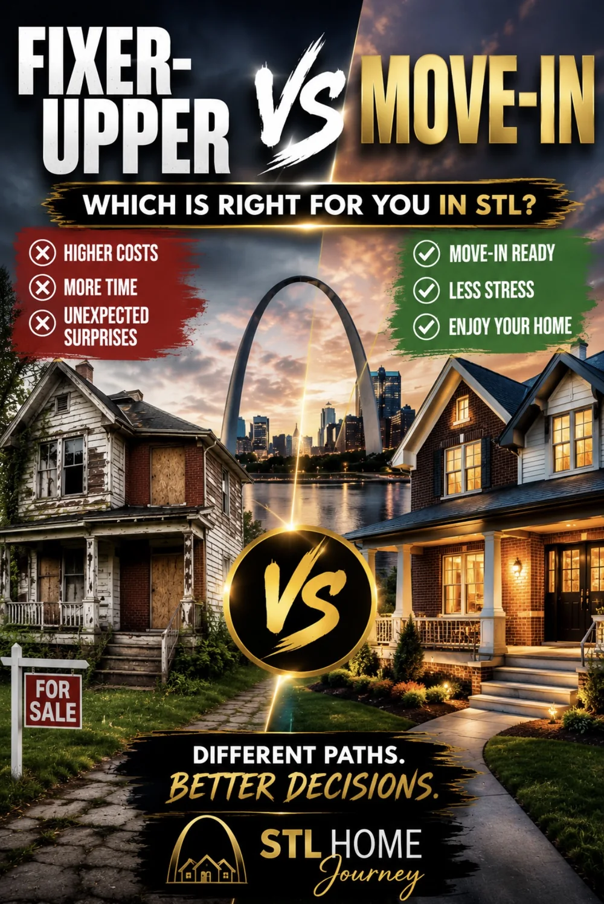

STL Home Journey
George Kindler
13 Years Experience At Your Fingertips
Last updated October 21, 2026
A fixer-upper’s price leaves out the work. Once you add the renovation, the financing and the time, the cheaper house isn’t always cheaper. Here’s how to compare the two paths on total cost.
Compare total cost, not list prices. Add a contractor’s number to the fixer-upper’s price, then compare it with move-in ready. If both land at the same cost in the same area, move-in ready usually wins. A fixer-upper makes sense when it gets you a house you couldn’t otherwise afford and you have a verified scope, reserves and a flexible timeline. When a fixer-upper makes sense ↓
Structural first, cosmetic second. A working HVAC system, a roof with life left, no active basement water, no major electrical red flags or foundation movement, and a house likely to get through financing and appraisal without drama. It doesn’t mean luxury finishes; a clean 1998 ranch with older countertops but solid systems can qualify. What move-in ready means ↓
In the calculator’s 2025–2026 MARIS sales, move-in-ready midpoints ran from about $219,000 in the 63125 Lemay corridor to about $600,000 in Kirkwood (63122) and $800,000 in Chesterfield (63005). The busiest move-in-ready range was $300,000 to $450,000 across South and West County. Move-in-ready prices ↓
It depends on the area. In South County, the gap between as-is and move-in-ready sales ran about $50,000 to $130,000 depending on the ZIP code. In St. Charles County, with newer homes, it’s narrower, closer to $25,000 to $40,000. In South City and inner-ring suburbs like Kirkwood, it can reach $150,000 to $200,000 when the renovation is strong. Why fixer-uppers look cheap ↓
Sometimes not. A $250,000 house that needs a roof, HVAC, flooring and basement waterproofing can cost more than a $310,000 house that needs almost nothing, before you count contractor delays and financing complications. 2026 expected repair costs →
Sources: 7,006 MARIS sales from 2025–2026 in the fixer-upper calculator data, and 2026 expected repair costs from the repair cost guide. About these numbers ↓
About these numbers: Prices on this page and in the calculator come from 7,006 MARIS sales in 79 St. Louis ZIP codes from 2025–2026, grouped by condition. That’s a different data set from the 2026 sales on the neighborhood, ZIP code and school district pages, so a figure here may not match the area page. For current prices in a specific area, use the area page. I’m refreshing this data at the end of 2026.

Different paths. Better decisions. The tradeoffs every St. Louis buyer should understand before choosing a price range.
Because the price leaves out the work. In the calculator’s 2025–2026 data, as-is homes in Oakville’s 63129 ZIP code sold around $311,000, against about $360,000 for move-in ready. In Kirkwood (63122) it was about $400,000 as-is against $600,000 move-in ready.
That spread attracts buyers. And it misleads them.
The fixer upper price is what you pay at closing. What you spend after closing — kitchen, bathrooms, roof, HVAC, electrical — is not in that number. A buyer who sees $311,000 and thinks "I'm getting a deal" may be right. Or they may be buying a $311,000 house that needs $90,000 of work, putting them at $401,000 total — above the move-in ready price in the same zip code, in a home they cannot fully live in for months.
In St. Louis the condition gap is wider than many buyers expect because of the age of the housing. Much of the city and inner-ring suburbs is older brick construction that holds up structurally but carries aging electrical panels, older plumbing and deferred maintenance that shows up fast in an inspection report.
As 2026 expected costs, a general refresh runs about $15,000 to $25,000, a moderate renovation $35,000 to $60,000 and a full renovation $75,000 to $120,000 or more, before any structural work. They’re a place to start a budget; you still need contractor quotes. St. Louis housing adds its own line items: Federal Pacific panels, installed in millions of homes between the 1950s and 1980s; clay tile sewer laterals, standard in St. Louis homes built before 1980; and tuckpointing on older brick.
Before choosing between paths, make sure you understand the hidden risks that come with lower-priced homes. What buyers regret most after buying a cheap house in St. Louis covers the infrastructure issues — sewer laterals, basement moisture, cosmetic flips — that catch buyers off guard after closing.
The items buyers walk past at showings are the ones that cost the most. A Federal Pacific Stab-Lok electrical panel looks identical to a modern panel from across the room. The sewer lateral under the yard is invisible without a camera, which is why I recommend a sewer scope ($150 to $300) on every St. Louis home. Negative grading pushing water toward the foundation is not obvious on a sunny day in May. This is why the walkthrough matters more on a fixer upper than any other purchase — and why getting a contractor through a property before you write the offer is money well spent.
What to Look For When Buying a House in St. LouisAs a home that sold in under 14 days at or above its list price. By that measure, the calculator’s 2025–2026 sales clustered in three tiers: about $250,000 to $350,000 for entry-level ranches and updated older homes, $350,000 to $550,000 in the mid-range, and $600,000 and up where condition and location premiums stack. By ZIP code, midpoints ran from about $219,000 in 63125 to about $600,000 in Kirkwood (63122) and $800,000 in Chesterfield (63005).
The term gets abused online. To most St. Louis buyers, move-in ready means a working HVAC system, a roof with real life left, updated or well-maintained kitchen and baths, no active basement water, no major electrical red flags, no serious foundation movement, and a house likely to pass financing and appraisal without drama. It doesn’t mean luxury finishes or a full remodel. In St. Louis, move-in ready is structural first, cosmetic second.
In the calculator’s 2025–2026 data, as-is sales cluster in South St. Louis City, North County, South County’s entry-level ZIP codes and parts of Jefferson County. The price ranges below are as-is sales in that data, not the 2026 medians on the area pages.
The highest density of fixer upper opportunity in the metro. Brick bungalows built between 1920 and 1955, many with original cast iron plumbing, electrical that was upgraded in the 1970s but not fully replaced, and deferred tuckpointing. Fixer upper prices in South City range from $78,000 to $265,000 depending on condition and zip code. The buyers who do best here know the scope before they close.
Florissant, Hazelwood, Berkeley, and Normandy offer fixer upper inventory at some of the lowest price points in the metro — $78,000 to $195,000. The housing stock is predominantly ranch and split-level construction from the 1950s and 1960s. Get a contractor through the house before you write the offer.
Affton, Mehlville, and Oakville have fixer upper inventory in the $235,000 to $311,000 range — the price point where a moderate renovation can produce a finished home at or below the move-in ready median. These are the markets where the fixer upper math is most compelling for buyers in the $70,000 to $90,000 income range. Competition is real even on dated inventory.
Arnold, Festus and Imperial have as-is inventory too. Jefferson County’s 2026 median property tax bill was $2,084, and the countywide median sale spent 18.5 days on market. Jefferson County 2026 prices and taxes →
It changes what you can shop, not just your payment. Paying for the work from savings keeps the loan smaller; a renovation loan rolls the work into the loan at a higher cost. A buyer at $80,000 income shopping for a fixer upper with $45,000 in planned renovation will land in different zip codes depending on whether they use cash reserves, a HomeStyle loan, or FHA 203k — because each path changes the effective purchase price that gets matched against the market.
You borrow against the purchase price only. Renovation is paid from savings after closing. Monthly payment is lower because you are borrowing less. On a $240,000 fixer upper with $45,000 renovation paid out of pocket, your mortgage is $240,000. Total out is $285,000 — which matches the move-in ready budget at this income level. The key difference: reserves are $45,000 lighter after closing, and if renovation scope grows, you are drawing from whatever remains.
This path works best for buyers with strong savings, realistic renovation scope, and no hard timeline. It is the lowest-risk financing approach if the reserves can support it.
Purchase price plus renovation budget rolled into one conventional loan. One closing. The rate is often higher than a standard conventional loan, so get both quotes; on a $285,000 loan, each extra percentage point is roughly $195 more per month at 7% to 8%. As little as 3% down on a one-unit primary home. Reserves stay intact. The tradeoff is higher monthly payment and more underwriting complexity — the lender reviews renovation scope and requires contractor approval before closing.
Caps renovation at $75,000 (HUD raised it from $35,000 in November 2024) and limits work to non-structural repairs — no structural changes, no foundation work, no room additions. Minimum 3.5% down with a 580+ credit score under FHA rules; lenders often require more. Expect a longer closing than a standard FHA loan. FHA mortgage insurance adds 1.75% upfront (rolled into the loan) plus 0.55% annually — on a $260,000 loan that is approximately $119 per month that lasts the life of the loan unless you refinance into conventional.
The Limited version works for a house that needs paint, floors, a kitchen refresh or system replacements that fit under the cap. It won’t work if the house needs structural repair.
No separate renovation cap beyond FHA loan limits. Structural work allowed. Same down payment and credit requirements as the Limited loan, but a HUD 203(k) consultant is required. Loan proceeds are managed by the lender and distributed in phases. The Standard version is the right tool for a property that needs a roof, foundation work, or full systems replacement — but it adds process complexity. Expect 60 or more days to close and a draw schedule that governs when contractors get paid.
Not every St. Louis lender offers the 203k Standard. The 203k rehabilitation loan requires lenders who have experience with the draw process and HUD consultant requirements. Verify your lender has closed 203k loans in St. Louis before starting the process.
It can, depending on the loan. In the calculator, a buyer at $80,000 income with $20,000 down at 7% has a budget of about $285,000. For context, 2026 median sale prices were $385,000 in Oakville, $323,500 in Mehlville, $305,000 in Arnold and $273,000 in Affton.
On the conventional-plus-savings path with a $45,000 moderate renovation, that buyer shops houses around $240,000 instead of $285,000. Same total cost, a different set of listings, and $45,000 less in reserves after closing.
With a HomeStyle loan, the loan covers the full $285,000, so the buyer shops the same price range as move-in ready while paying a higher rate to manage a renovation. On that path, the fixer-upper doesn’t open anything new.
The same total budget, split two ways. The fixer-upper column is the purchase price that leaves room for a moderate renovation of about $45,000. Budgets come from the calculator’s example terms ($20,000 down, 7% rate); your lender sets the real number.
| Income | Total Budget | Move-In Ready Price | Fixer-Upper Price (+ ~$45K Reno) |
|---|---|---|---|
| $60K | $200K–$220K | $200K–$220K | $155K–$175K |
| $70K | $230K–$260K | $230K–$260K | $185K–$215K |
| $80K | $265K–$300K | $265K–$300K | $220K–$255K |
| $100K | $330K–$375K | $330K–$375K | $285K–$330K |
| $120K | $400K–$450K | $400K–$450K | $355K–$405K |
They knew the scope before they made an offer: not a guess, not a hope, but a contractor walkthrough with a number attached. Two hours and a few hundred dollars before the offer. That is the difference between a project and a money pit.
I am a Marine Corps veteran who became a real estate agent in St. Louis. I have closed VA loans on fixer uppers, watched buyers take on South City bungalows that turned into eight-month projects, and watched other buyers walk into Affton with a contractor and a clear scope and come out with exactly the house they wanted at a price that made sense.
The buyers who struggle almost always made an offer based on how the house felt. A brick bungalow on a nice street in Affton. They can see what it could be. That is a real instinct. But a failing sewer lateral, a Federal Pacific panel in the utility room and negative grading around the foundation do not care about the potential. They have a cost. That cost has to fit inside the budget before you close, not after.
The second thing I tell buyers: the math only works if the neighborhood shifts. If a HomeStyle loan at +1% puts you in the same zip code as a move-in ready purchase, you are paying more per month for the privilege of managing a renovation. That is a lifestyle choice, not a financial one. There is nothing wrong with it — but understand what you are choosing.
Sometimes, but the house has to pass the VA appraisal first. The appraiser checks VA minimum property requirements, and items like a failing roof, active water intrusion or a safety hazard usually have to be fixed before the loan funds. A Federal Pacific panel doesn’t automatically end a VA deal, but it can come up. VA renovation loans exist, but very few St. Louis lenders offer them, so the realistic options are negotiating repairs before closing, adjusting the price or walking away. Can you buy a fixer-upper with a VA loan? → · Federal Pacific panels and VA loans →
VA Home Loan in St. Louis: What Kills Deals Before ClosingWhen the total cost gets you a house you couldn’t afford move-in ready, a contractor has verified the scope, and you have the reserves and the time to finish the work.
Touring before you make an offer? Flag issues as you walk with my walk-through tool and watch the 2026 expected repair costs add up. Save or email your results to compare houses and bring real numbers to the offer.
Move-in ready
Not necessarily. I’ve walked through beautifully staged flips with serious hidden issues behind the walls. Cosmetic updates don’t equal structural soundness, so the inspection matters just as much.
Fast when they’re priced right. In 2026 St. Louis sales, 990 homes sold within 4 days at a median 104% of list, while 390 sat more than 60 days. The well-priced, move-in-ready houses are the ones that draw multiple offers in a weekend. When the house has multiple offers →
Financing and condition
Peeling paint, foundation concerns, roof problems or active water intrusion can complicate FHA and VA loans, insurance underwriting and appraisals, even if you’re willing to do the work. That’s a big reason move-in-ready homes sell at a premium. How your loan changes the math ↑
Yes, and they’re often a better fit, because the VA appraisal has minimum property requirements. Deferred maintenance like roof issues, foundation concerns, peeling paint or water intrusion can fail a VA appraisal regardless of price. Can VA buyers buy a fixer-upper? ↑
The comparison tool runs your income, down payment, and renovation scope against 76 St. Louis zip codes with MARIS price tiers by condition and square footage from 2025–2026. It shows which areas land within 5% of the same total cost on both paths, and what each financing choice costs you in buying power.